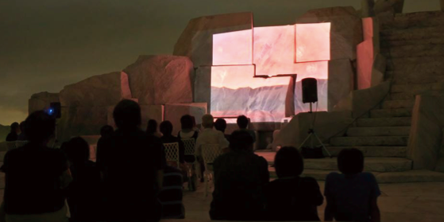
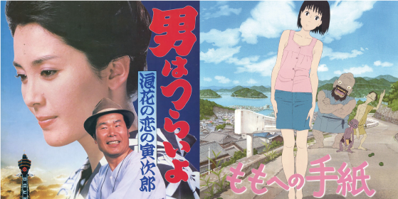
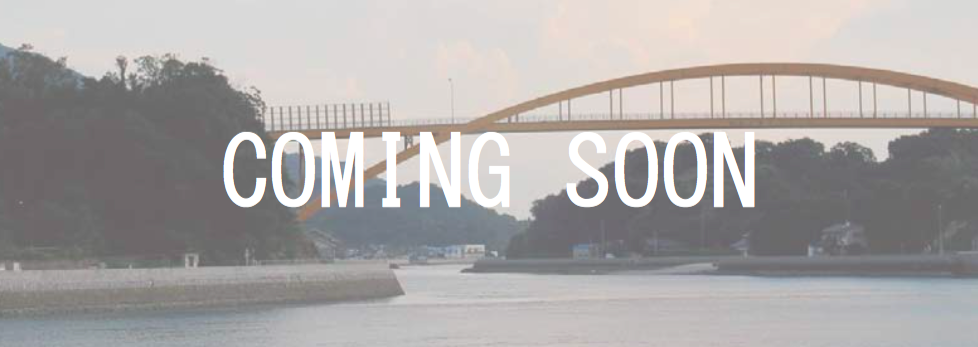

瀬戸内海にある、生口島・高根島の様々な場所をつかった野外映画祭です。毎年会場を増やしながら、島と映画の魅力を伝えていきます。家族で楽しめる映画から、若手監督のガッツある最新映画まで。島も映画も満喫できる、まさに夏の映画祭です。

今年の映画祭会場は、潮風が心地よい立地に建つ「広島県立瀬戸田高等学校」・夕日が沈むビーチを背にスクリーンに眺む「瀬戸田サンセットビーチ」で開催します。瀬戸内海を舞台にした映画を上映します。スケジュールをご確認の上、是非遊びにきて下さい。

瀬戸田で過ごすおすすめスポットを「見る・食べる・泊まる」のキーワードでご紹介します。尾道ラーメンの食文化や耕三寺・島ごと美術館構想などの文化施設など、生口島・高根島に息づく生活風景そのものが、映画のワンシーンのように特別な時間を演出します。
- [8月21日（金）の開場]
- 広島県立瀬戸田高等学校（広島県尾道市瀬戸田町名荷 1110-2）
- 【本州方面より】しまなみ海道「生口島北IC」より車で約7分
- 【四国方面より】しまなみ海道「生口島南IC」より車で約20分
- [8月22日（土）・23日（日）の開場]
- 瀬戸田サンセットビーチ（広島県尾道市瀬戸田町垂水 1506-15）
- 【本州方面より】しまなみ海道「生口島北IC」より車で約15分
- 【四国方面より】しまなみ海道「生口島南IC」より車で約10分
- 駐車場100台（大型バス2台 / バイク12台）